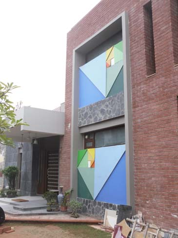
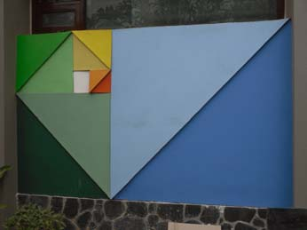
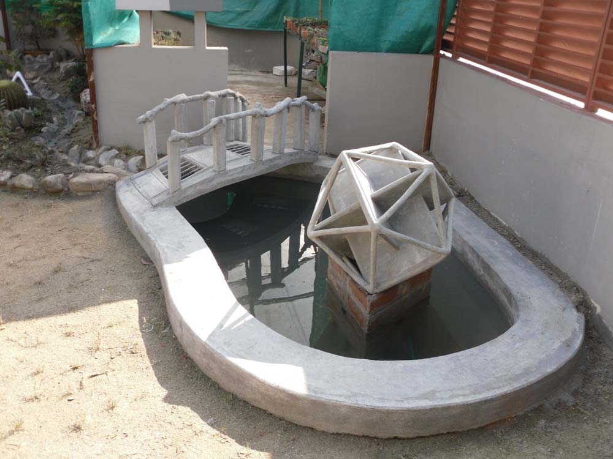
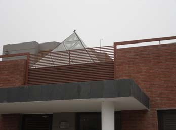
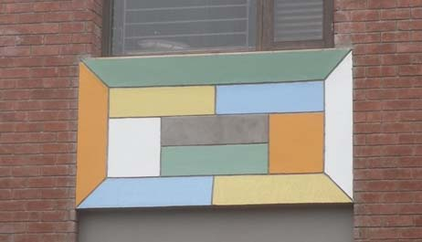
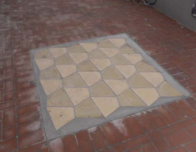
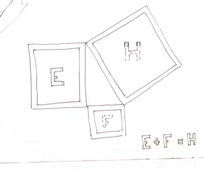
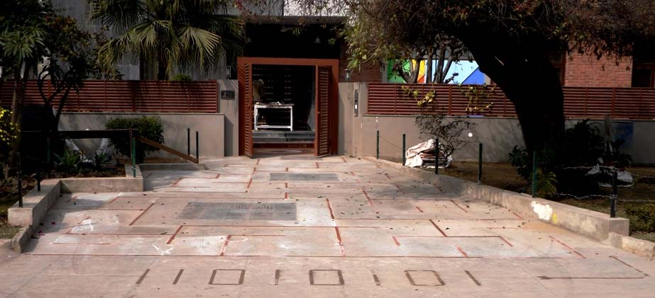
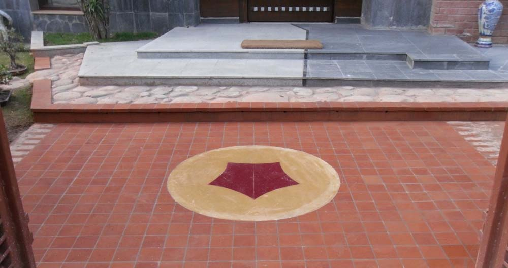
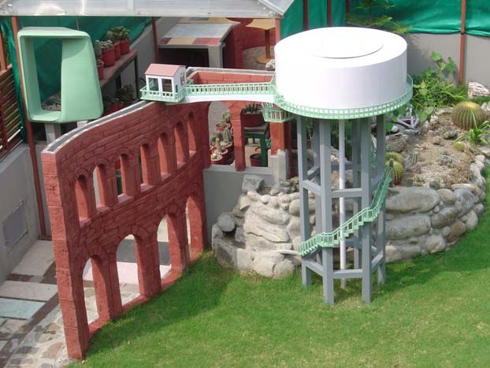

An interactive tour
A House of Mathematics
Every mural, every paving tile, every sculpture — a piece of mathematics.
This paper is based on 'lectures' in simple everyday language that I've been giving to mostly non-mathematical visitors on some motifs — see photographs below — in our house. Hopefully this written version shall appeal to a wider audience.
K.S. Sarkaria, "213, 16A" and Mathematics, 2010
Ten stops through the author's house at 213, 16A in Chandigarh. At each stop a photograph, his own words from the paper, and an interactive to explore the mathematics he built into his home.
The Tour
-

§1 · Front doorPerfectly proportioned
The mural of spiralling rectangles, and a proof that the golden ratio is irrational.
-

§2 · Water pondBeesmukhi
An icosahedron made of three interlocking golden rectangles — sculpted in concrete.
-

§3 · RooftopPyramid
The glass pyramid above the stairs, and why there are exactly five regular solids.
-

§4 · Office windowMiss Universe
A topologist's dodecahedron. Euler's V − E + F, the torus, the Klein bottle, and Poincaré.
-
 — Intermission
— IntermissionOver a cuppa
On doing mathematics as a child in the zone, and why pictures are worth a thousand symbols.
-

§5 · Rooftop floorFour half-turns
Any quadrilateral tiles the plane. And Marjorie Rice's pentagon, which ought not to.
-

§6 · North wallGrecian origami
Jeanneret's forgotten brick mural, E + F = H, and Pythagoras by paper-cutting.
-

§7 · The drivewayAmazing curves
A maze of red brick that spells out 11010101 — the binary for 213.
-

§8 · Welcome matMagic Carpet
A pentagon with curved edges, a glimpse of hyperbolic space, and Poincaré's halo.
-

— Tailpiecebing's ome
A space that can be contracted but not collapsed — and a child who saw an elf.
About this tour
This site is an interactive companion to K.S. Sarkaria's "213, 16A" and Mathematics, first written in 2010 as a thirty-seven-page guided tour of the Chandigarh house he designed and built as a teaching instrument for visitors. Each architectural feature — a mural, a sculpture, a tiled floor, a welcome mat, the very driveway — embodies a piece of mathematics.
Every quotation is his own, taken verbatim from the paper. Every photograph is his. The interactives on each page are an attempt to let you reach out and touch the mathematics he built into his home. His website is here.